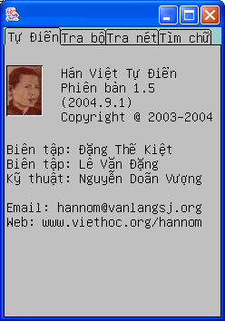

|
|
|
Tự Điển Hán Việt Thiều Chửu - Bản Palm
Tác giả: Thiều Chửu - Nguyễn Hữu Kha (1902 - 1954)
Biên tập: Đặng Thế Kiệt, Lê Văn Đặng, Nguyễn Hữu Vinh
Kỹ thuật: Nguyễn Doãn Vượng
|
|

Nếu bạn muốn chạy nhu liệu Tự Điển Hán Việt Thiều Chửu trên máy Palm PDA của bạn,
bạn cần làm những bước sau đây:
- Xác định Palm OS Version của máy Palm của bạn.
Bạn có thể đọc manual hay vào web để tìm các tin tức này.
- Gắn SuperWaba Run Time
Bạn vào mạng và lại trang nhà: http://www.superwaba.org/install, lựa đúng installation file (khoảng 209 Kb) thích hợp với Palm OS Version của máy Palm của bạn. Sau khi lấy về thì unzip ra, và install các file: SuperWaba.pdb, SuperWaba.prc và SWNatives.prc vào máy Palm.
- Lấy Tự Điển Hán Việt Thiều Chửu (bản Palm) về (khoảng 1.4 Meg), kế đó unzip ra, và install tất cả các file trong đó vào máy Palm.
- Mỗi khi muốn sử dụng trên Palm, nhấn vào Icon HanViet để chạy Tự Điển Hán Việt Thiều Chửu.
Ghi chú:
- Để chạy được Tự Điển, máy cần phải có màn ảnh lớn hơn 160x160 pixels.
- Hiện tại có một vài chữ Hán không thể hiển thị được vì bộ font thiếu các chữ đó. Chúng tôi sẽ bổ túc các khiếm khuyết này trong các phiên bản kế.
- Vì CPU của Palm thường chậm hơn Pocket PC, cho nên Tự Điển Hán Việt Thiều Chửu (bản Palm) chạy hơi chậm so với bản Pocket PC. Lúc khởi động cần đến khoảng 45 seconds để nạp tự điển, sau đó khi tra chữ thì có khi nhanh, có khi chậm (đôi khi phải mất đến 8 seconds). Hiện nay phiên bản run-time mới nhất của SuperWaba là 4.5, tới đầu năm 2005, khi SuperWaba tung ra bộ run-time 5.0 với vận tốc nhanh hơn gấp 5 lần, hy vọng lúc đó tự điển sẽ chạy nhanh hơn.
- 10/30/04: Thêm phần nhận dạng chữ Hán bằng cách vẽ chữ lên màn hình.
- 10/22/04: Thêm 1 cái keyboard icon để có thể gọi bàn phím Việt.
- 10/21/04: Giới thiệu bản Palm cho Tự Điển Hán Việt Thiều Chửu.
|
|
|